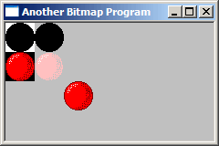

Example: bmp_two
The following conditions need to be met for the effect to work correctly: First off, the colour image must be black in all areas that we want to display as transparent. And second, the mask image must be white in the areas we want transparent, and black elsewhere. The colour and mask images are displayed as the two left most images in the example picture on this page.
How does this get us transparency? First we BitBlt() the mask image using the SRCAND
operation as the last parameter, and then on top of that we BitBlt() the colour image using
the SRCPAINT operation. The result is that the areas we wanted transparent don't change
on the destination HDC while the rest of the image is drawn as usual.
SelectObject(hdcMem, g_hbmMask);
BitBlt(hdc, 0, 0, bm.bmWidth, bm.bmHeight, hdcMem, 0, 0, SRCAND);
SelectObject(hdcMem, g_hbmBall);
BitBlt(hdc, 0, bm.bmHeight, bm.bmWidth, bm.bmHeight, hdcMem, 0, 0, SRCPAINT);
Pretty simple eh? Fortunately it is, but one question remains... where does the mask come from? There are basically two ways to get the mask...
LoadBitmap().
Since the first one is nothing new, you should be able to do things that way yourself if you want to. The second
way involves from BitBlt() trickery, and so I will show one way of accomplishing this.
The simplest way to do it, would be to loop through every pixel on the colour image, check it's value and then set the corresponding
pixel on the mask to black or white... SetPixel() is a very slow way to draw images however,
and it's not really practical.
A much more efficient way involves using the way BitBlt() converts from colour images to black and
white. If you BitBlt() (using SRCCOPY) from an HDC holding a colour image into an HDC holding
a black and white image, it will check what colour is set as the Background Colour on the colour image, and
set all of those pixels to White, any pixel that is not the background colour will end up Black.
This works perfectly to our advantage, since all we need to do is set the background colour to the colour we want
transparent, and BitBlt() from the colour image to the mask image. Note that this only works with
a mask bitmap that is monochrome (black and white)... that is bitmaps with a bit depth of 1 bit per pixel.
If you try it with a colour image that only has black and white pixels, but the bitmap itself is greater than 1 bit (say
16 or 24 bit) then it won't work.
Remember the first condition for succesful masking above? It was that the colour image needs to be black everywhere
we want transparent. Since the bitmap I used in this example already meets that condition it doesn't really need anything
special done, but if you're going to use this code for another image that has a different colour that you want transparent
(hot pink is a common choice) then we need to take a second step, and that is use the mask we just created to alter
the original image, so that everywhere we want transparent is black. It's ok if other places are black too, because
they aren't white on the mask, they won't end up transparent. We can accomplish this by BitBlt()ing from
the new mask to the original colour image, using the SRCINVERT operation, which sets all the areas that
are white in the mask to black in the colour image.
This is all a bit of a complex process, and so it's nice to have a handy utility function that does this all for us, and here it is:
HBITMAP CreateBitmapMask(HBITMAP hbmColour, COLORREF crTransparent)
{
HDC hdcMem, hdcMem2;
HBITMAP hbmMask;
BITMAP bm;
// Create monochrome (1 bit) mask bitmap.
GetObject(hbmColour, sizeof(BITMAP), &bm);
hbmMask = CreateBitmap(bm.bmWidth, bm.bmHeight, 1, 1, NULL);
// Get some HDCs that are compatible with the display driver
hdcMem = CreateCompatibleDC(0);
hdcMem2 = CreateCompatibleDC(0);
SelectBitmap(hdcMem, hbmColour);
SelectBitmap(hdcMem2, hbmMask);
// Set the background colour of the colour image to the colour
// you want to be transparent.
SetBkColor(hdcMem, crTransparent);
// Copy the bits from the colour image to the B+W mask... everything
// with the background colour ends up white while everythig else ends up
// black...Just what we wanted.
BitBlt(hdcMem2, 0, 0, bm.bmWidth, bm.bmHeight, hdcMem, 0, 0, SRCCOPY);
// Take our new mask and use it to turn the transparent colour in our
// original colour image to black so the transparency effect will
// work right.
BitBlt(hdcMem, 0, 0, bm.bmWidth, bm.bmHeight, hdcMem2, 0, 0, SRCINVERT);
// Clean up.
DeleteDC(hdcMem);
DeleteDC(hdcMem2);
return hbmMask;
}
NOTE: This function call SelectObject() to temporarily select the colour bitmap we pass it into an
HDC. A bitmap can't be selected into more than one HDC at a time,
so make sure the bitmap isn't selected in to another HDC when you call this function or it will fail.
Now that we have our handy dandy function, we can create a mask from the original picture as soon as we load it:
case WM_CREATE:
g_hbmBall = LoadBitmap(GetModuleHandle(NULL), MAKEINTRESOURCE(IDB_BALL));
if(g_hbmBall == NULL)
MessageBox(hwnd, "Could not load IDB_BALL!", "Error", MB_OK | MB_ICONEXCLAMATION);
g_hbmMask = CreateBitmapMask(g_hbmBall, RGB(0, 0, 0));
if(g_hbmMask == NULL)
MessageBox(hwnd, "Could not create mask!", "Error", MB_OK | MB_ICONEXCLAMATION);
break;
The second parameter is of course the colour from the original image that we want to be transparent, in this case black.
SRCAND raster operation, or ROP code for BitBlt() means to combine the bits using AND.
That is: only bits that are set both in the source AND the destination get set in the final result. We use this with our
mask to set to black all the pixels that will eventually have colour on them from the colour image. The mask image
has black (which in binary is all 0's) where we want colour, and white (all 1's) where we want transparency. Any value
combined with 0 using AND is 0, and therefor all the pixels that are black in the mask are set to 0 in the result and end up black as well.
Any value that is combined with 1 using AND is left unaffected, so if it was 1 to begin with it stays 1, and if it was 0 to begin
with it stays 0... therefor all the pixels that are white in our mask, are completely unaffected after the
BitBlt() call. The result is the top right image in the example picture.
SRCPAINT uses the OR operation, so if either (or both) of the bits are set, then they will be set in the
result. We use this on the colour image. When the black (transparent) part of our colour image is combined with
the data on the destination using OR, the result is that the data is untouched, because any value combined with 0 using
the OR operation is left unaffected.
However, the rest of our colour image isn't black, and if the destination also isn't black, then we get a combination of the source and destination colours, the result you can see in the second ball on the second row in the example picture. This is the whole reason for using the mask to set the pixels we want to colour to black first, so that when we use OR with the colour image, the coloured pixels don't get mixed up with whatever is underneath them.
XOR operation used to set the transparent colour in our original image to black (if it isn't black
already). Combining a black pixel from the mask with a non-background colour pixel in the destination leaves it
untouched, while combining a white pixel from the mask (which remember we generated by setting a particular colour
as the "background") with the background colour pixel on the destination cancels it out, and sets it to black.
This is all a little GDI mojo that depends on it's colour vs. monochrome handling, and it hurts my head to think about it too much, but it really makes sense... honest.
SRCCOPY,
then using each one alone with the SRCAND and SRCPAINT operations respectively, and finally
combining them to produce the final product.
The background in this example is set to gray to make the transparency more obvious, as using these operations on a white or black background makes it hard to tell if they're actually working or not.